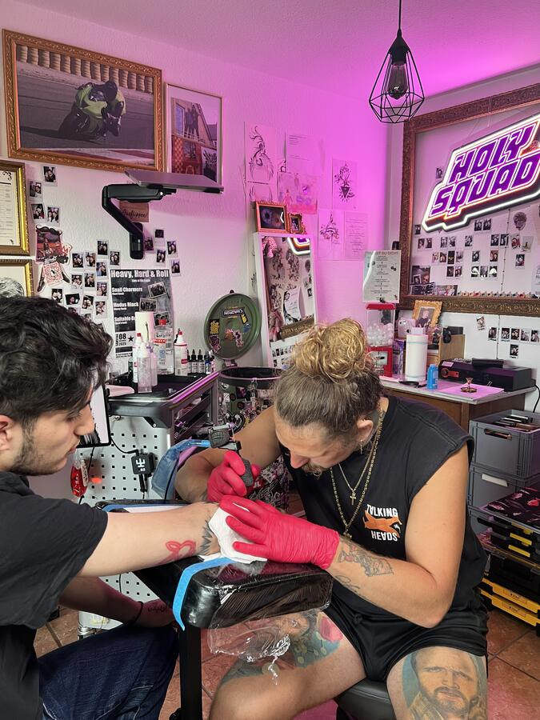

Das Atelier
Ein privater Rückzugsort statt Laufkundschaft und Wartezimmer-Gefühl. Hier gibt es nur dich, deine Idee und den Kapt'n.
Kein Durchlauf.
Kein Lärm.
Privat, weil es bewusst kein klassisches Laufkundschaftsstudio ist. Persönlich, weil mir der Mensch genauso wichtig ist wie das Tattoo. Echt, weil es keine Show gibt – du kommst zu mir und bekommst mich genauso, wie ich bin.
Ich arbeite ausschließlich in geschlossenen 1-zu-1-Sessions, ohne Laufkundschaft und ohne Publikumsverkehr. In dieser Zeit geht es nur um dich, deine Geschichte und dein Tattoo. Kein Stress, keine fremden Menschen, kein ständiges Rein und Raus – einfach ein geschützter Raum, in dem du komplett du selbst sein kannst.
Entspannte Lichtstimmung, gute Musik, richtig guter Kaffee und auch mal ein Drink. Kunst, Tattoos und persönliche Dinge im Raum sorgen dafür, dass es sich nicht wie ein steriles Studio anfühlt, sondern wie ein Ort, an dem man gerne ein paar Stunden verbringt.
Wo es passiert.


Mehr Eindrücke & frische Fotos aus dem Atelier folgen laufend. Schau ruhig ab und zu wieder vorbei.
Privat
Nur du, deine Idee und der Kapt'n. Keine fremden Blicke.
Ruhig
Zeit statt Taktung. Ein Termin, volle Aufmerksamkeit.
Persönlich
Musik, Kaffee, echte Gespräche – wie im eigenen Wohnzimmer.
Lust, den Raum kennenzulernen?